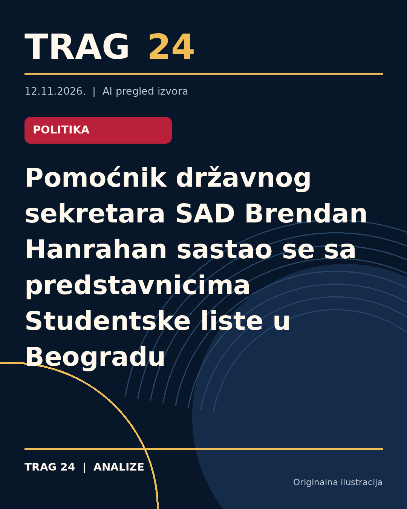

Pomoćnik državnog sekretara SAD Brendan Hanrahan sastao se sa predstavnicima Studentske liste u Beogradu

ŠTA SE DOGODILO
Pomoćnik državnog sekretara Sjedinjenih Američkih Država Brendan Hanrahan održao je sastanak sa predstavnicima Studentskog pokreta i Studentske liste u Beogradu. Tom prilikom im je čestitao na postignutom izbornom uspehu i razgovarao o narednim koracima u daljoj saradnji.
HRONOLOGIJA
Sastanak je održan u okviru Hanrahanove posete Beogradu. Prema dostupnim informacijama, ovo nije njegova prva poseta Srbiji, jer je ranije, u julu 2025. godine, imao susret sa tadašnjim predsednikom Srbije Aleksandrom Vučićem. Ovog puta sastanak sa studentskim predstavnicima organizovan je uz prisustvo otpravnika poslova Ambasade SAD Aleksandra Titola.
ŠTA NAVODE IZVORI
Američka ambasada u Srbiji putem svojih zvaničnih kanala objavila je da je Hanrahan spreman na zajednički rad na ostvarivanju zajedničkih prioriteta. Cilj je nastavak i unapređenje Strateškog dijaloga između SAD i Srbije, kao i dodatno jačanje bilateralnih odnosa. Predstavnici Studentskog pokreta najavili su i sastanke sa drugim diplomatskim misijama, poput italijanske, sa fokusom na razgovore o temama od značaja za budućnost zemlje, kao što su vladavina prava i energetika.
ŠTA JE POTVRĐENO
Potvrđeno je da je sastanak održan i da je na njemu izražena spremnost za dalju saradnju između SAD i Srbije. Takođe je potvrđeno da su studenti dobili čestitke za svoj izborni uspeh i da su se razgovarali o prioritetima koji uključuju i dalje unapređenje političkog dijaloga. Prisustvo pomoćnika državnog sekretara i otpravnika poslova Ambasade potvrđuje važnost događaja.
ŠTA NIJE POTVRĐENO
Nisu dostupni detalji o specifičnim dogovorima ili akcijama koje će proisteći iz ovog sastanka. Takođe nije precizirano koje konkretne teme su detaljnije obrađene osim opštih oblasti poput vladavine prava i energetike, kao ni koji su naredni koraci konkretno planirani.
ŠTA OSTАJE OTVORENO: Ostaje otvoreno na koji način će se jačati saradnja između Studentskog pokreta i američke diplomacije, kao i kakvim će preciznim aktivnostima biti definisan budući rad na unapređenju bilateralnih odnosa i strateškog dijaloga. Takođe nije poznato koliko će sastanci sa ostalim međunarodnim partnerima uticati na rešavanje pitanja koja su u fokusu studentskih predstavnika.
Izvori
- https://www.danas.rs/vesti/politika/predstavnici-studentskog-pokreta-i-studentke-liste-sastali-se-sa-pomocnikom-drzavnog-sekretara-sad/
- https://n1info.rs/vesti/pomocnik-drzavnog-sekretara-brendan-hanrahan-sastao-se-sa-predstavnicima-studentske-liste/
- https://www.blic.rs/vesti/politika/predstavnici-studentske-liste-se-sastali-sa-pomocnikom-drzavnog-sekretara-sad/fky143j
Ova analiza je pripremljena uz pomoć veštačke inteligencije na osnovu javno dostupnih izvora. Navodi izvora nisu nužno nezavisno potvrđeni.